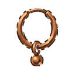

Bakır Küpe T1
T1Sade bakır küpe
İSTATİSTİKLER Normal +0
- Saldırı +1,3
- Savunma +3,8
- Can +3,8
- İsabet +5
- Kaçınma +2
- Kritik hasarı +%0,042
- Düşüren
- Mağara Yarasası Karanlık Mağara D1
Mağara Örümceği Karanlık Mağara D1
Zindan Muhafızı T1 Karanlık Mağara D1
Zindan Lordu T1 Karanlık Mağara D1